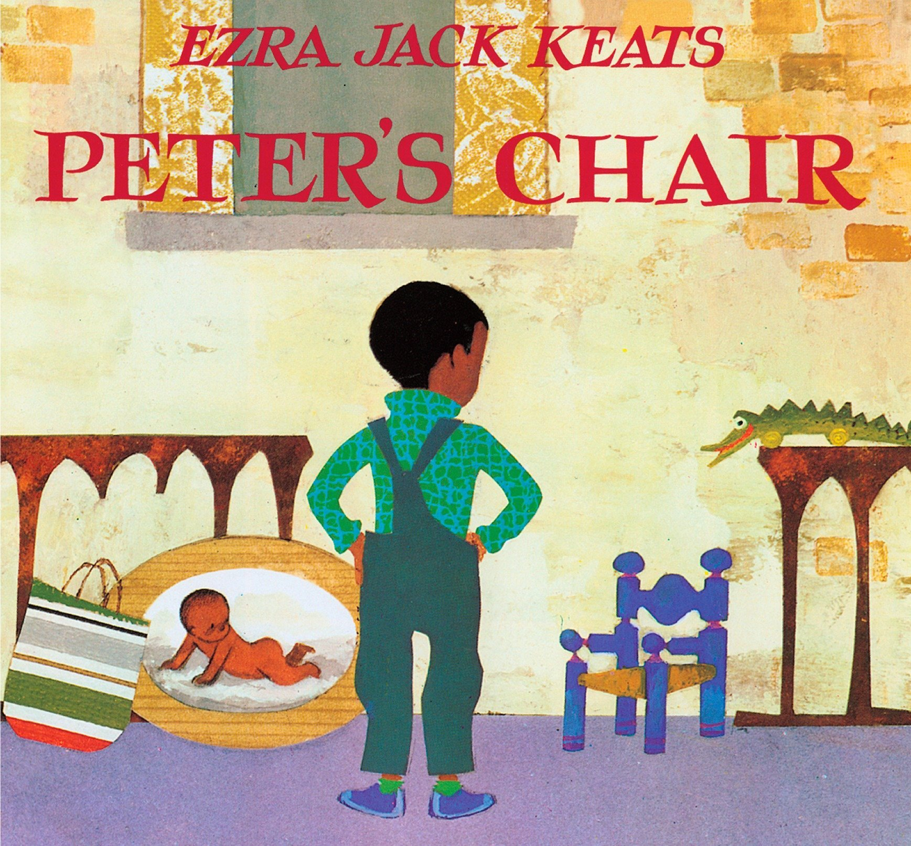

-
The Snowy Day
No book has captured the sense of possibility of the first snowfall better The Snow Day. Universal in its appeal, the story has become a favorite of millions, as it reveals a child’s wonder at a new world, and the hope of capturing and keeping that wonder forever.
-

Peter's Chair
This is a gentle and reassuring story about sibling rivalry. The award-winning, classic stories about Peter and his neighborhood friends from the Caledcott Medal-winning author, Ezra Jack Keats. Peter has a new baby sister.When Whistle for Willie was first published in 1964, The New York Times wrote “Mr. Keats’ illustrations boldly, colorfully capture the child, his city world. and the shimmering heat of a summer’s day.”
-

A Letter To Amy
Peter is having a birthday party, and he’s asked all of his friends to come. But Amy is a special friend because she is a girl– so Peter decides to write her a special invitation. When he rushes out in a thunderstorm to mail it, though, he bumps smack into Amy herself and knocks her to the ground. Will she ever come to his party now? And how will the boys greet a girl?
-
Jennie's Hat
Jennie’s favorite aunt is sending her a new hat, and Jennie is sure it will be beautiful. But when the box arrives, the hat inside is very plain. She had imagined a wonderful hat with big colorful flowers and even tries to make her own hat from a straw basket! Jennie is almost ready to give up on her dream when she receives a fanciful surprise from some very special friends.